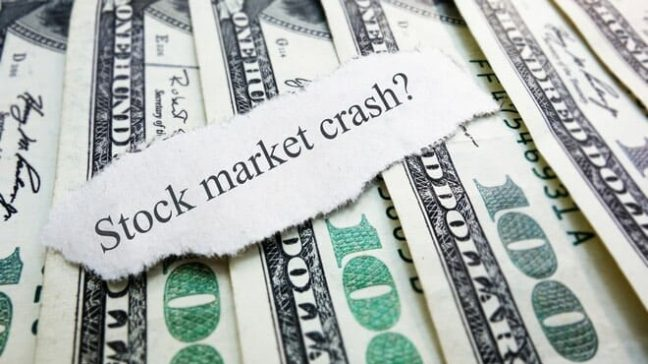

Investors money Washed Out
What Goverment will be doing next ??
Lets Check it out
here
Fall & Rise of the Indian Stock Markets |
||
|---|---|---|
| Date | Sensex | Nifty 50 |
| Then | 36,000 | 12,000 |
| March-lows | 23,000 | 7,500 |
| Present | 34,500 | 11,200 |
The 2020 stock market crash is a global stock market crash that began on 20 February 2020.[1][2][3] On 12 February, the Dow Jones Industrial Average, the NASDAQ Composite, and S&P 500 Index all finished at record highs (while the NASDAQ and S&P 500 reached subsequent record highs on 19 February).[4][5] From 24 to 28 February, stock markets worldwide reported their largest one-week declines since the 2008 financial crisis,[6][7][8] thus entering a correction.[9][10][11] Global markets into early March became extremely volatile, with large swings occurring in global markets.[12][13] On 9 March, most global markets reported severe contractions, mainly in response to the COVID-19 pandemic and an oil price war between Russia and the OPEC countries led by Saudi Arabia.[14][15] This became colloquially known as Black Monday. At the time, it was the worst drop since the Great Recession in 2008.[16][17] Three days after Black Monday there was another drop, Black Thursday, where stocks across Europe and North America fell more than 9%. Wall Street experienced its largest single-day percentage drop since Black Monday in 1987, and the FTSE MIB of the Borsa Italiana fell nearly 17%, becoming the worst-hit market during Black Thursday.[18][19][20] Despite a temporary rally on 13 March (with markets posting their best day since 2008), all three Wall Street indices fell more than 12% when markets re-opened on 16 March.[21][22] At least one benchmark stock market index in all G7 countries and 14 of the G20 countries were declared to be in bear markets. During March 2020, global stocks saw a downturn of at least 25%, and 30% in most G20 nations. On 20 March, Goldman Sachs warned that the US GDP would shrink 29% by the end of the 2nd quarter of 2020, and that unemployment could skyrocket to at least 9%.[23] Australian Prime Minister Scott Morrison has called the looming economic crisis 'akin to the Great Depression'.[24] In the United States, stock prices rose steeply from the March lows: on 26 May 2020, the Dow Jones Industrial Average eclipsed 25,000 points for the first time since the previous March,[25] and by the beginning of the following month, the S&P 500 eclipsed its 200-day moving average while the NASDAQ-100 rallied 42% from the three indices most recent local minimum on 23 March.[26] The rally was motivated by news of potential coronavirus vaccines and economic recovery, but economists warned that it could be a "bear market trap".[27][28][29][30]
The 2020 stock market crash occurred as a result of the COVID-19 pandemic, which is the most impactful pandemic since the flu pandemic of 1918.[31] Rising fears and global economic shutdown due to the economic impact of the COVID-19 pandemic is believed to be a main cause of the stock market crash, though many experts have argued that it is an 'accelerant' rather than a sole core reason behind the crash.[32][33] During 2019, the IMF reported that the world economy was going through a 'synchronized slowdown', which entered into its slowest pace since the financial crisis of 2007–08.[34] 'Cracks' were showing in the consumer market as global markets began to suffer through a 'sharp deterioration' of manufacturing activity.[35] Global growth was believed to have peaked in 2017, when the world's total industrial output began to start a sustained decline in early 2018.[36] The IMF blamed 'heightened trade and geopolitical tensions' as the main reason for the slowdown, citing Brexit and the China – United States trade war as primary reasons for slowdown in 2019, while other economists blamed liquidity issues.[34][37] Since the financial crisis of 2007–08, there has been a large increase in corporate indebtedness, rising from 84% of gross world product in 2009 to 92% in 2019, or about $72 trillion.[38][39] In the world's eight largest economies–China, the United States, Japan, the United Kingdom, France, Spain, Italy, and Germany–total corporate debt was about $51 trillion in 2019, compared to $34 trillion in 2009.[40] If the economic climate worsens, companies with high levels of debt run the risk of being unable to make their interest payments to lenders or refinance their debt, forcing them into restructuring.[41] The Institute of International Finance forecast in 2019 that, in an economic downturn half as severe as the 2008 crisis, $19 trillion in debt would be owed by non-financial firms without the earnings to cover the interest payments on the debt they issued.[40] The McKinsey Global Institute warned in 2018 that the greatest risks would be to emerging markets such as China, India, and Brazil, where 25-30% of bonds had been issued by high-risk companies.[42]
The reduction in the demand for travel and the lack of factory activity due to the COVID-19 pandemic significantly impacted demand for oil, causing its price to fall.[188] In mid-February, the International Energy Agency forecasted that oil demand growth in 2020 would be the smallest since 2011.[189] Chinese demand slump resulted in a meeting of the Organization of the Petroleum Exporting Countries (OPEC) to discuss a potential cut in production to balance the loss in demand.[190] The cartel initially made a tentative agreement to cut oil production by 1.5 million barrels per day following a meeting in Vienna on 5 March 2020, which would bring the production levels to the lowest it has been since the Iraq War.[191] After OPEC and Russia failed to agree on oil production cuts on 6 March and Saudi Arabia and Russia both announced increases in oil production on 7 March, oil prices fell by 25 percent.[192][193] On 8 March, Saudi Arabia unexpectedly announced that it would increase production of crude oil and sell it at a discount (of $6–8 a barrel) to customers in Asia, the US, and Europe, following the breakdown of negotiations as Russia resisted calls to cut production. The biggest discounts targeted Russian oil customers in northwestern Europe.[194] Prior to the announcement, the price of oil had gone down by more than 30% since the start of the year, and upon Saudi Arabia's announcement it dropped a further 30 percent, though later recovered somewhat.[195][196] Brent Crude, used to price two-thirds of the world's crude oil supplies, experienced the largest drop since the 1991 Gulf War on the night of 8 March. Also, the price of West Texas Intermediate fell to its lowest level since February 2016.[197] Energy expert Bob McNally noted, "This is the first time since 1930 and '31 that a massive negative demand shock has coincided with a supply shock;"[198] in that case it was the Smoot–Hawley Tariff Act precipitating a collapse in international trade during the Great Depression, coinciding with discovery of the East Texas Oil Field during the Texas oil boom. Fears of the Russian–Saudi Arabian oil price war caused a plunge in U.S. stocks, and have had a particular impact on American producers of shale oil.[199
The 2020 China–India skirmishes are part of an ongoing military standoff between China and India. Since 5 May 2020, Chinese and Indian troops have engaged in aggressive melee, face-offs and skirmishes at locations along the Sino-Indian border, including near the disputed Pangong Lake in Ladakh and the Tibet Autonomous Region, and near the border between Sikkim and the Tibet Autonomous Region. Additional clashes also took place at locations in eastern Ladakh along the Line of Actual Control (LAC). In late May, Chinese forces objected to Indian road construction in the Galwan River valley.[24][25] According to Indian sources, melee fighting on 15/16 June 2020 resulted in the deaths of 20 Indian soldiers (including an officer)[26] and casualties of 43 Chinese soldiers (including death of an officer).[b][28][20][29] Media reports stated that soldiers were taken captive on both sides and released in the coming few days. On the Indian side ten soldiers were reported to have been taken captive while the Chinese numbers remain unconfirmed.[13][21] Later Chinese Foreign Ministry and the Indian Army denied any detention of Indian personal.[30] It was only on 25 July that reports of disengagement at Galwan, Hot Springs and Gogra emerged.[31] As of 30 July, disengagement remained incomplete at Pangong Tso and at PP 17A Gogra while "complete disengagement and de-escalation" between India and China was remaining.[32][33] On 30 July the Chinese Ambassador to India said that China favours not clarifying the LAC.[34] A day later reports emerged that the Indian Army will continue enhanced deployment of troops even through winter if the disengagement process was not complete.[35] Amid the standoff, India reinforced the region with 12,000 additional workers, who would assist India's Border Roads Organisation in completing the development of Indian infrastructure along the Sino-Indian border.[36][37][38] Experts have postulated that the standoffs are Chinese pre-emptive measures in responding to the Darbuk–Shyok–DBO Road infrastructure project in Ladakh.[39] The Chinese have also extensively developed their infrastructure in these disputed border regions.[40][41] The revocation of the special status of Jammu and Kashmir, in August 2019, by the Indian government has also troubled the Chinese.[42] However, India and China have both maintained that there are enough bilateral mechanisms to resolve the situation through quiet diplomacy.[43][44] Following the Galwan Valley skirmish on 15 June, numerous Indian government officials said that border tensions will not impact trade between India and China despite some Indian campaigns about boycotting Chinese products.[45][46] However, in the following days, various types of action were taken on the economic front including cancellation and additional scrutiny of certain contracts with Chinese firms, and calls were also made to stop the entry of the Chinese into strategic markets in India such as the telecom sector.[47][48][49] In the beginning of August 2020, Government of China's customs data showed that Chinese exports to India had fallen by 25% as compared to the previous year for the same period.[50][51]